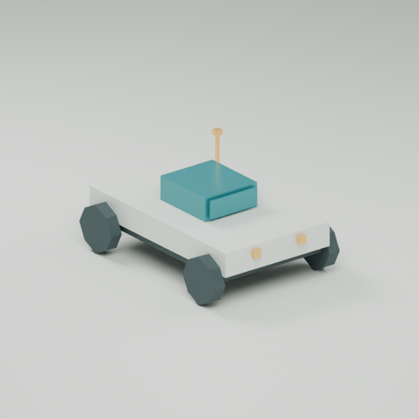

Rover mission
Drive a little rover, hit a wall, replay a route, then change the rules. RF2 computes its position and mission result.
Drive the rover →THE RF2 APP LAB
Start with an app you can use. Open its rules. Change one thing and see what happens. Each example shows where RF2 runs and what another tool supplies.
NEW / RF2 LEARNING STUDIO
Three small missions teach remembered values, decisions and loops. Pause, take a real RF2 step, change the source and inspect what happened.
Enter the interactive academy →NEW HERE? START WITH ONE SMALL WIN
You do not need a terminal or another language for this browser lesson.
Browser reference execution. The heater is an on-screen simulation; no connected hardware is controlled.
Drive a little rover, hit a wall, replay a route, then change the rules. RF2 computes its position and mission result.
Drive the rover →Submit a temperature and watch heating retain or change state. A separate counter uses the same input, display and receipt components.
Try the control room →Manual simulations, not connected hardware.
Native RF2 computes vertices and triangles. A reviewed Blender adapter supplies materials, lighting and export. Download the real GLB and editable Blender scenes.
Explore the 3D asset →Recorded local outputs. Blender does not run in this browser.BUILD ON THE SAME FOUNDATION
Thermostat and counter import one shared component module: forms, metrics, status, actions, source editing, receipts and a rule-session controller. Their decisions stay in separate RF2 programs.
This is a browser binding, not a completed native RF2 widget toolkit. We have not measured a general GUI-development advantage or tested these interfaces with human learners.
Read the two-app guide →